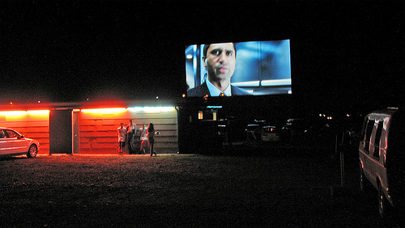
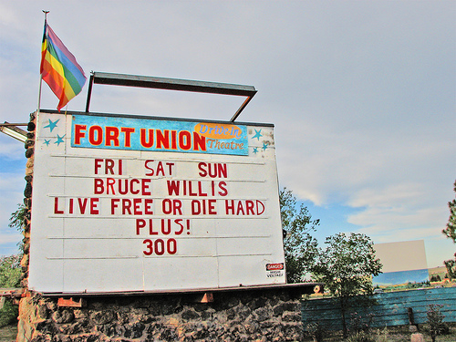

www.FortUnionDriveIn.com
Welcome to the Fort Union Drive In!
Fort Union Drive-In Movie Theater
Las Vegas, New Mexico
Tel. 505-425-9934 for the latest
info on what movies are playing
On Mora Highway (Seventh St. extension) just north of town
OPEN - FRI - SAT - SUN **
May-September 2010.
Gates open an hour before dusk, the first movie starts at dusk, as soon as it is dark enough (call for exact times)
$12 per carload Radio
sound at 88.7 FM
Concession stand open with pizza, popcorn, sodas,
nachos, hot dogs, juices and candies!!
One of the few remaining authentic drive-in
theaters in the US! Enjoy it now!


“One
of the true creative geniuses of our time. His is a unique and
valuable gift of populism and simplicity.
His work is wise,hard-hitting, unusually effective, and
deserves the support ofeveryone
who wishes for a more humane world. Especially in these
particularly divisive times, Jim has a gift
for bridging the ‘divide.’ One of the great comedic and
auditory geniuses ofour day.”
- Thom
Hartmann
“I
loved The
Brill Building Movie!
It had just the right amount of irreverence,
sarcasm, irony, and music!”
-Diego
Romero www.HowlerPapers.com
“I
love your activism and your insights – and the movie
combines them perfectly.” -Former New Mexico Governor Bill
Richardson